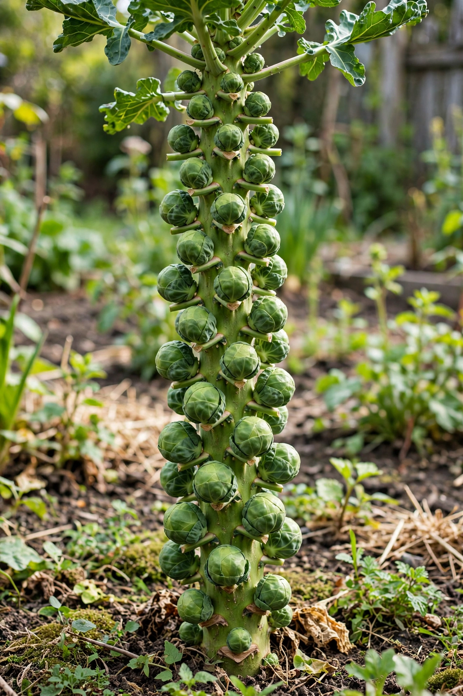

 Brussels sprouts on the stalk | |
| Species | Brassica oleracea |
|---|---|
| Cultivar group | Gemmifera |
| Origin | Low Countries (probably Belgium) |
The Brussels sprout is a member of the Gemmifera cultivar group of cabbages (Brassica oleracea), grown for its edible buds. The leafy green vegetables are typically 1.5–4 cm (0.6–1.6 in) in diameter and resemble miniature cabbages. The Brussels sprout has long been popular in Brussels, Belgium, from which it gained its name.
Brussels sprouts grow on thick stalks, with the buds developing in the leaf axils along the stem. The plants thrive in cool climates with a long growing season; a touch of frost is traditionally said to improve their flavour by converting starches to sugars. Precursors of the modern vegetable were likely grown in ancient Rome, and the recognizable sprout was cultivated in the Low Countries — the region of modern Belgium — by the 13th to 16th centuries, spreading from the area of Brussels.
Today major production takes place in the Netherlands, Germany, the United Kingdom, and the United States (chiefly California). Harvesting is often done by hand or with specialised machinery that strips the sprouts from the stalk.
Brussels sprouts are typically cooked by boiling, steaming, stir-frying, grilling, or roasting, and are a traditional accompaniment to roast dinners and Christmas meals in Britain. Overcooking releases glucosinolate sinigrin, which has a sulfurous odour historically responsible for the vegetable's unpopularity with some diners; modern cultivars, bred in the Netherlands in the 1990s for lower levels of bitter glucosinolates, have a milder flavour.
Raw Brussels sprouts are rich in vitamin C and vitamin K, and contain moderate amounts of B vitamins, folate, manganese, dietary fibre, and the antioxidant sulforaphane. Excessive consumption may be inadvisable for people taking anticoagulant medication because of the high vitamin K content.